3. РАСЧЁТ МАГНИТНОЙ ЦЕПИ ГРАФИЧЕСКИМ МЕТОДОМ
В качестве примера, определим магнитный поток Ф и магнитную индукцию Вδ в воздушном зазоре; магнитные напряжения 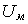 и 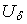 на элементах цепи (рис. 15.1) для варианта N = 36, соответствующего номеру записи фамилии студента в учебном журнале группы.
Определим материал ферромагнетика, заданный числом k, и параметры схемы замещения цепи (рис. 15.1, б), заданные формулами:
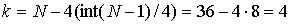 (литая сталь 10895, рис. 15.2), где int() – целая часть числа;
lм = 0,5 + 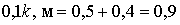 м;
δ = 4k×10-4, м = 16×10-4 м;
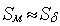 = 10k×10-4 , м2 = 40×10-4 м2;
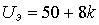, В = 50 + 32 = 82 В (постоянное напряжение на катушке);
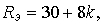 Ом 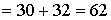 Ом (сопротивление катушки);
I = 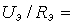 82/62 @ 1,323 А (ток в катушке);
w = 500 + 50k = 500 + 200 = 700 (число витков обмотки катушки).

Находим МДС обмотки F = wI = 700·1,323 = 926 А и магнитное сопротивление зазора 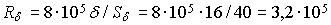 1/Гн.
Магнитное напряжение на воздушном зазоре
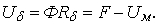
При 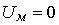 магнитный поток
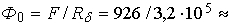
2,9×10-3 Вб, а при Ф = 0 (d ® ¥ и 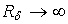), 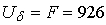 А.
Строим (на одном рисунке 15.3) отражённую характеристику 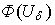 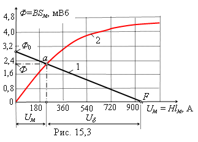воздушного зазора (прямую линию 1) по двум точкам с координатами [Ф0; 0] и [0; F], и вебер-амперную характеристику 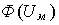ферромагнитного сердечника 2, заменив магнитные величины В и Н на осях кривой В(Н) соответственно величинами Ф и Uм, умножая значения магнитной индукции В на площадь Sм поперечного сечения сердечника, а значения напряжённости магнитного поля Н - на длину lм средней м. с. л. в сердечнике.
Прямая, соединяющая две точки Ф0 и F, пересекает кривую Ф(Uм) в точке а, горизонталь через которую дает на оси ординат искомый магнитный поток Ф » 2,2 мВб, а вертикаль позволяет определить на оси абсцисс магнитные напряжения Uм » 220 А и Uδ » 700 А.
Магнитная индукция Вδ в воздушном зазоре δ
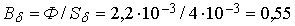 Тл.